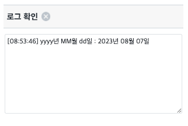

WebSquare의 API를 활용해 Date객체를 입력한 날짜 포맷을 적용해 문자열로 반환 받는 예제입니다.
오늘 날짜에 날짜 포맷 지정하기
STEP 1. 대소문자에 주의하며 입력 컴포넌트에 날짜 포맷을 입력합니다.
y: Year
M: Month
d: Day
H: Hour
m: Minute
s: Second
S: Millisecond
그림 1.브라우저(Chrome) 실행 예시
STEP 2. 버튼을 클릭해 오늘 날짜와 시간에 지정한 포맷을 적용하고 로그 확인 영역에서 결과를 확인합니다.
그림 2.브라우저(Chrome) 실행 예시

[소스 코드 예시]
// 예제 파일에서는 스크립트 scwin.btn_setFormat_onclick에 작성되어 있습니다. // 현재 날짜 객체 생성 var _date = new Date(); var _result = ""; // 매개변수로 Date객체(_date) 와 포맷을 입력 _result = WebSquare.date.getFormattedDate(_date, "yyyyMMdd");
WebSquare.date.getFormattedDate